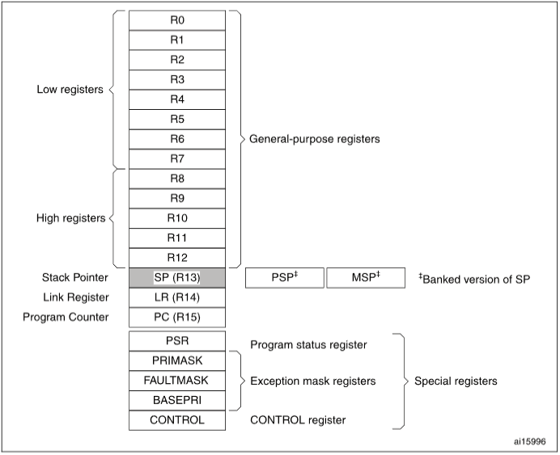
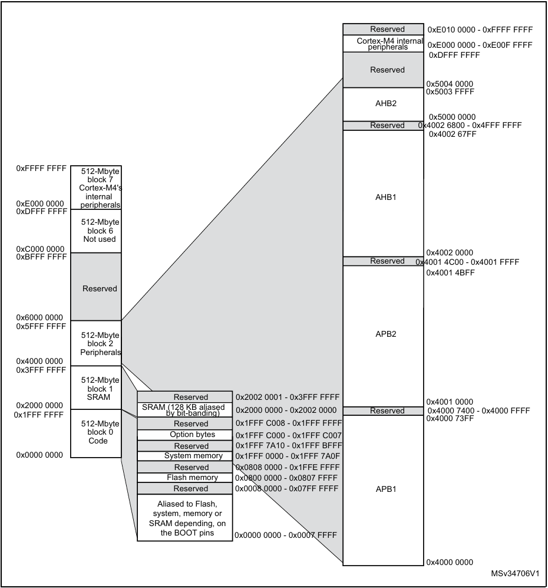
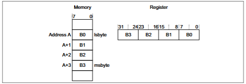
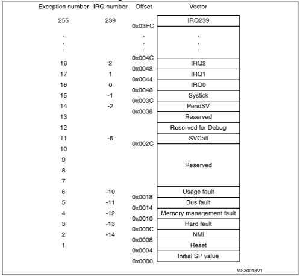
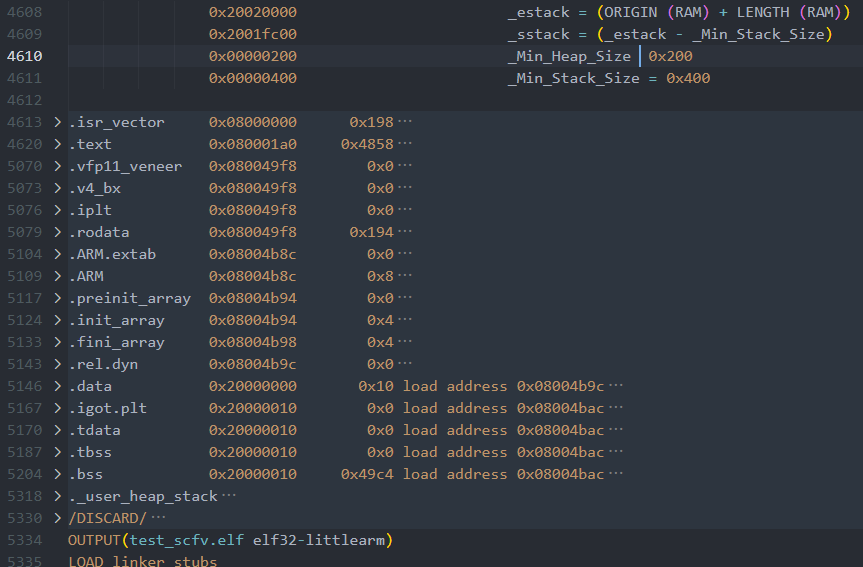
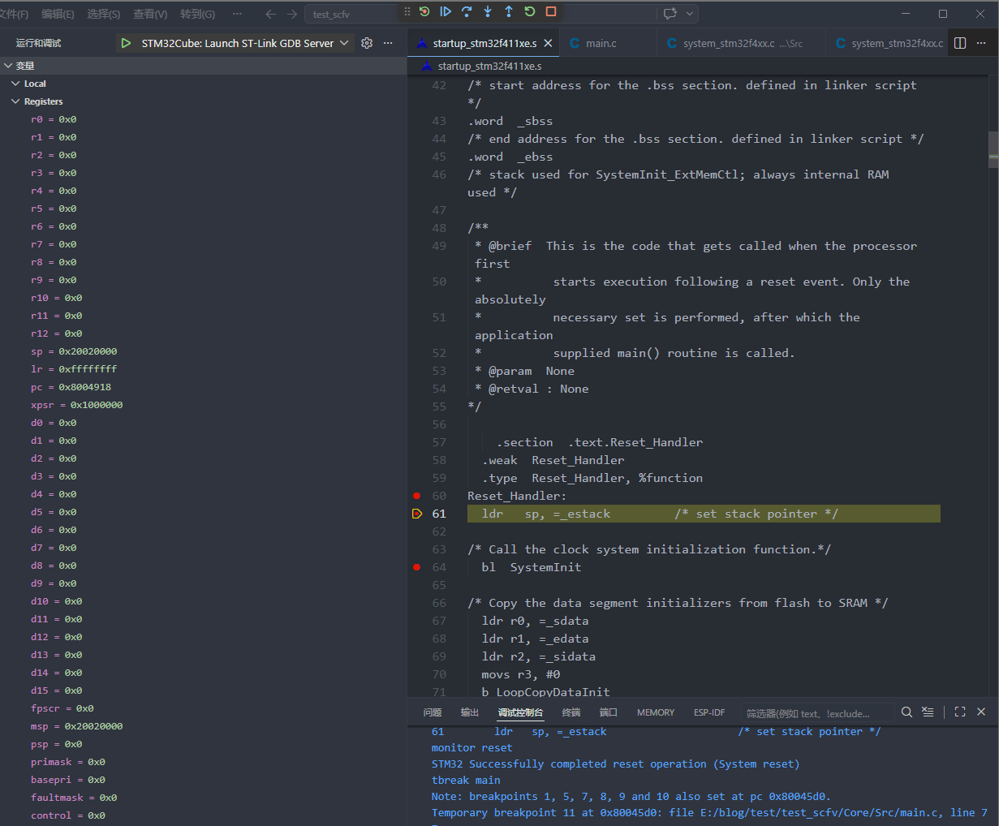
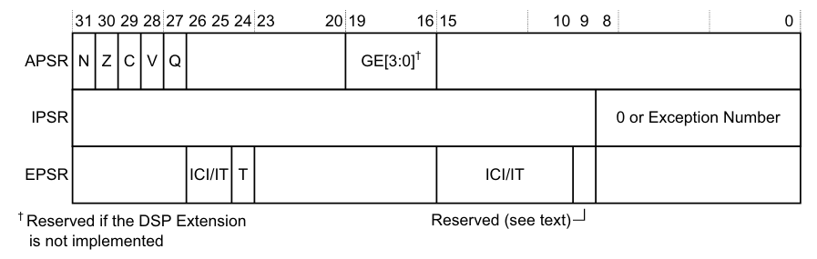
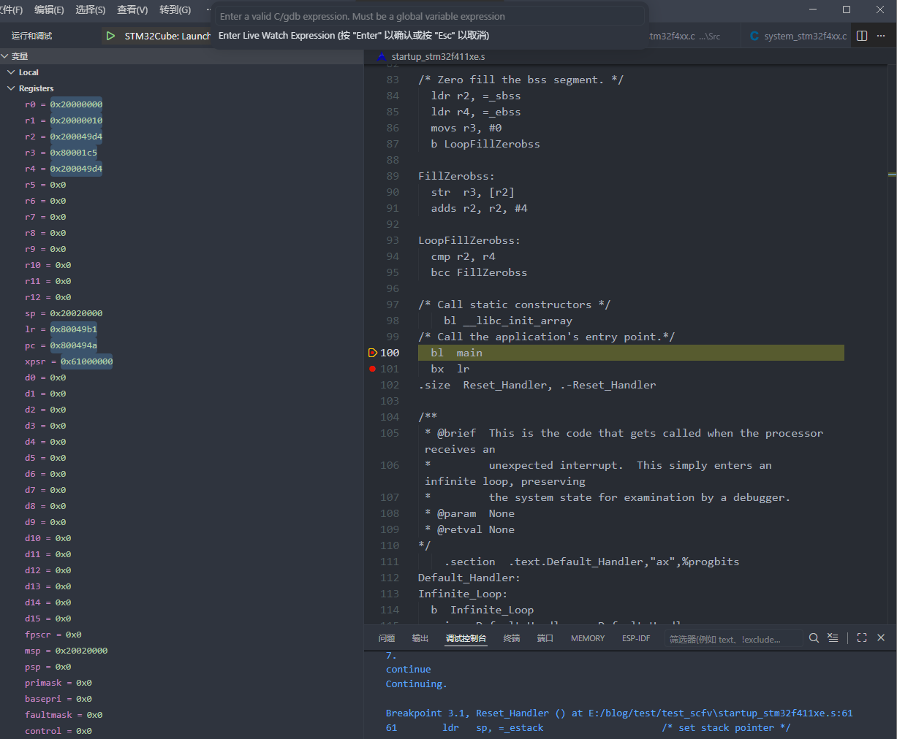

0. 背景
为更好的理解并制作 STM32 的 bootloader，对 STM32 启动流程进行梳理，目的是为了理清 MCU 上电后，一直到寻找到并执行 main 函数期间具体做了什么。
本次记录使用的目标芯片是 STM32F411，工程文件通过 STM32CubeMX 创建，调试使用 STM32CubeIDE for VSCode。
1. 前置信息
1.1. Core 寄存器
首先对其 Core 寄存器做简单介绍，具体参见 PM0214 Programming manual STM32 Cortex®-M4 MCUs and MPUs programming manual。

* Processor core registers
General-purpose registers：R0-R12 是 32 位通用数据操作寄存器。
Stack pointer：R13 是堆栈指针（SP）。在线程模式下，CONTROL 寄存器的位指示使用以下栈指针：
- 0：主栈指针（MSP）。
- 1：进程栈指针（PSP）。
重置时，处理器会用地址 0x00000000 的值加载 MSP。
Link register：R14 是链路寄存器（LR）。它存储子程序、函数调用和异常的返回信息。重置时，处理器加载 LR 值 0xFFFFFFFF。
Program counter：R15 是程序计数器（PC）。它包含当前的节目地址。重置时，处理器会将
Reset_Handler的值加载到 PC 上，该向量位于地址 0x00000004。Program status register：程序状态寄存器（PSR）包含：
- 申请项目状态登记册（APSR）：包含之前指令执行中条件标志的当前状态。
- 中断程序状态寄存器（IPSR）：包含当前中断服务例程（ISR）的异常类型编号。
- 执行程序状态寄存器（EPSR）：包含 thumb state bit。
Priority mask register：优先掩码寄存器，阻止所有具有可配置优先级的异常激活。
Fault mask register：故障掩膜寄存器，阻止所有异常的激活，唯独非屏蔽中断（NMI）除外。处理器在退出除 NMI 处理器外的任何异常处理程序时，将 FAULTMASK 位清除为 0。
Base priority mask register：基础优先级掩码寄存器，定义了异常处理的最低优先级。当 BASEPRI 设置为非零值时，它会阻止所有优先级相同或更低的异常被激活。
CONTROL register：控制寄存器，CONTROL 寄存器控制处理器处于线程模式时所使用的栈和软件执行的权限级别，并指示 FPU 状态是否处于激活状态。
Handler 模式始终使用 MSP，因此处理器在 Handler 模式下会忽略显式写入 CONTROL 寄存器的活跃栈指针位。异常条目和返回机制会更新 CONTROL 寄存器。
在操作系统环境中，建议以 Thread 模式运行的线程使用 PSP，而内核和异常处理程序使用 MSP。
默认情况下，Thread 模式使用 MSP。要将 Thread 模式下使用的栈指针切换到 PSP，可以选择：- 使用 MSR 指令将活动栈指针位设置为 1;
- 以相应的 EXC_RETURN 值执行异常返回线程模式。
在更改栈指针时，软件必须在 MSR 指令之后立即使用 ISB 指令。这确保了 ISB 之后的指令使用新的栈指针执行。
1.2. Memory 分布

* Memory map
- Code：程序代码的可执行区域，也可以把数据放在这里；
- SRAM：数据的可执行区域；
此外，STM32F411 使用小端格式存储。

* 小端序存储
1.3. 向量表
向量表包含栈指针的重置值，以及所有异常处理程序的起始地址。

* 向量表
1.4. boot 配置
| BOOT0 | BOOT1 | 模式 |
|---|---|---|
| 0 (低) | x | 从 Flash 启动（正常模式） |
| 1 (高) | 0 | 从 System Memory 启动（DFU 模式） |
| 1 | 1 | 从 SRAM 启动 |
2. 从 0 开始
2.1. CPU 内核涉及的硬件自复位行为
深入阅读 ARMv7-M 技术参考手册 ，这是 Cortex-M4 的底层架构手册，可以找到描述复位行为的伪代码：
1 | // B1.5.5 Reset behavior |
将上述伪代码进行梳理
1 | TakeReset() —— 硬件自动执行，无软件参与 |
复位后的 CPU 状态：
- 模式：Thread 模式（不是 Handler）
- 特权级别：特权级（可以访问所有资源）
- 栈指针选择：MSP（使用主堆栈）
- IPSR：0（不在处理任何异常）
- FPU：关闭（需要 SystemInit() 中手动开启）
- 中断：全部关闭（NVIC 寄存器全部清零）
- R0-R12：未知值（不能假设任何值）
- R0-R12 全部初始化为未知值，意味着复位后，代码不能假设任何通用寄存器有确定的值。
- VTOR（Vector Table Offset Register）复位值 = VTOR[31:7] + ‘0000000’ = 0x00000000，但 STM32F411 的 Flash 映射：BOOT0=0 时，0x00000000 → 映射到 0x08000000，所以实际读取的是 Flash 起始地址 0x08000000。
2.2. startup_stm32f411xe.s
现在对启动文件进行分析，主要内容包含以下几点：
1 | startup_stm32f411xe.s |
汇编器指令
- .syntax unified：使用统一汇编语法（UAL），ARM 和 Thumb 指令统一写法
- .cpu cortex-m4：告诉汇编器目标 CPU 是 Cortex-M4
- .fpu softvfp：使用软件浮点库（不使用硬件 FPU 指令，STM32F411 有硬件 FPU，但启动文件不需要浮点运算，实际的 FPU 开启在 SystemInit() 中通过 C 代码完成）
- .thumb：生成 Thumb 指令集代码
链接脚本符号声明
- _sidata：.data 初始值在 Flash 中的地址（初始化后 sidata 会被复制到 SRAM）
- _sdata：.data 段在 SRAM 中的起始地址
- _edata：.data 段在 SRAM 中的结束地址
- _sbss：.bss 段在 SRAM 中的起始地址
- _ebss：.bss 段在 SRAM 中的结束地址
Reset_Handler
ldr sp, =_estack：将 _estack 的值加载到 SP（在上述 2.1. CPU 内核涉及的硬件自复位行为 已经完成这个过程。此处认为应该是保险措施，确保即使向量表被修改或从其他入口进入 Reset_Handler，SP 也是正确的）bl SystemInit：调用 SystemInit()
2
3
4
5
6
7
8
9
10
11
12
13
14
15
16
{
/* FPU settings ------------------------------------------------------------*/
SCB->CPACR |= ((3UL << 10*2)|(3UL << 11*2)); /* set CP10 and CP11 Full Access */
SystemInit_ExtMemCtl();
/* Configure the Vector Table location -------------------------------------*/
SCB->VTOR = VECT_TAB_BASE_ADDRESS | VECT_TAB_OFFSET; /* Vector Table Relocation in Internal SRAM */
}
- 复制 .data 段（Flash → SRAM）
2
3
4
5
6
7
8
9
10
11
12
13
14
15
16
17
18
19
20
21
22
23
24
25
26
27
28
29
30
31
32
33
34
35
36
37
38
39
40
41
42
43
44
45
46
47
假设：
_sidata = 0x0800 2000（Flash 中 .data 初始值的起始地址）
_sdata = 0x2000 0000（SRAM 中 .data 段起始）
_edata = 0x2000 0010（SRAM 中 .data 段结束，共 16 字节 = 4 个 int）
Flash 中存储：
┌─────────────────────┐
│ 0x0800 2000: 0x01 │ ← 全局变量 int a = 1 的初始值
│ 0x0800 2004: 0x02 │ ← 全局变量 int b = 2 的初始值
│ 0x0800 2008: 0x03 │ ← 全局变量 int c = 3 的初始值
│ 0x0800 200C: 0x04 │ ← 全局变量 int d = 4 的初始值
└─────────────────────┘
复制过程：
第 1 次循环：r3=0, r4=0x20000000, 比较 0x20000000 < 0x20000010 ✓
CopyDataInit:
r4 = *(0x08002000 + 0) = 0x01
*(0x20000000 + 0) = 0x01
r3 = 4
第 2 次循环：r3=4, r4=0x20000004, 比较 0x20000004 < 0x20000010 ✓
r4 = *(0x08002004) = 0x02
*(0x20000004) = 0x02
r3 = 8
第 3 次循环：r3=8, r4=0x20000008, 比较 ✓
r4 = *(0x08002008) = 0x03
*(0x20000008) = 0x03
r3 = 12
第 4 次循环：r3=12, r4=0x2000000C, 比较 ✓
r4 = *(0x0800200C) = 0x04
*(0x2000000C) = 0x04
r3 = 16
第 5 次循环：r3=16, r4=0x20000010, 比较 0x20000010 < 0x20000010 ✗
退出循环
最终 SRAM：
┌─────────────────────┐
│ 0x2000 0000: 0x01 │ int a = 1
│ 0x2000 0004: 0x02 │ int b = 2
│ 0x2000 0008: 0x03 │ int c = 3
│ 0x2000 000C: 0x04 │ int d = 4
└─────────────────────┘
- 清零 .bss 段
该过程类似上述 复制 .data 段（Flash → SRAM）
- 调用 __libc_init_array：目前不理解❓
- 调用 main
2
3
4
5
6
7
8
9
如果 main() 返回（正常情况不应该返回），执行 bx lr。
此时 lr = 0xFFFFFFFF（复位时硬件设置的值）。
bx lr 尝试跳转到 0xFFFFFFFF，这不是合法地址。
CPU 会触发 UsageFault 或 HardFault，最终进入 Default_Handler 死循环。
防止 main() 意外返回而无错误处理。
- Default_Handler：默认的错误处理，即死循环
- 向量表：保存中断入口地址
- 弱别名声明：所有 Handler 默认指向 Default_Handler
2.3. .map 文件
上述 2.2. startup_stm32f411xe.s 分析到了在复位后软件会执行涉及以下行为：
- 复制 .data 段（Flash → SRAM）
- 清零 .bss 段
故此处对照 .map 文件，继续梳理

* .map 文件涉及的各数据段分配
此处列出上述非 0 的数据段：
Flash 中的段（只读，掉电不丢失）：
- .isr_vector 向量表
- .text 代码
- .rodata 只读数据（不需要复制 Flash → SRAM）
- .ARM ARM 异常处理表❓
- .init_array 构造函数指针表❓
- .fini_array 析构函数指针表❓
- .data 已初始化变量的初始值（备份）
SRAM 中的段（可读写，掉电丢失）：
- .data 已初始化变量（从 Flash 复制而来）
- .bss 未初始化变量（启动时清零）
2
3
4
5
6
7
8
9
10
11
12
13
14
15
16
17
18
19
20
21
SRAM (128KB)
┌─────────────────────┐ 0x20020000 ← _estack（SP 初始位置）
│
│ 栈向下生长 ↓
│
├─────────────────────┤ 0x2001FC00 ← _sstack（栈底，不能更低）
│
│ （可用空间）
│
├─────────────────────┤ ← _end（堆顶，由 .bss 段结束决定）
│
│ 堆向上生长 ↑
│
├─────────────────────┤ ← _ebss（.bss 段结束）
│ .bss 段
├─────────────────────┤ ← _sbss（.bss 段开始）
│ .data 段
├─────────────────────┤ 0x20000000 ← _sdata
└─────────────────────┘
2.4. .ld 链接脚本（TODO）
…
3. 运行！
此处设置以下几处断点，以验证上述：
- Reset_Handler 执行前（CPU 内核涉及的硬件自复位行为）
- Reset_Handler 执行完成（startup）
3.1. Reset_Handler 执行前（CPU 内核涉及的硬件自复位行为）
复位后的 CPU 状态：
- 模式：Thread 模式（不是 Handler）
- 特权级别：特权级（可以访问所有资源）
- 栈指针选择：MSP（使用主堆栈）
- IPSR：0（不在处理任何异常）
- FPU：关闭（需要 SystemInit() 中手动开启）
- 中断：全部关闭（NVIC 寄存器全部清零）
- R0-R12：未知值（不能假设任何值）

* Reset_Handler 执行前断点
观察上述与预期一致。
.map 文件中
Reset_Handler的函数地址如下
2
3
0x08004918 0x50 CMakeFiles/test_scfv.dir/startup_stm32f411xe.s.obj
0x08004918 Reset_Handler见 ARMv7-M Architecture Reference Manual - B1.4.2
The special-purpose Program Status Registers, xPSR 小节内容对于 PSR 寄存器有所描述。
* PSR 寄存器
2
3
4
5
6
7
8
9
10
11
12
13
14
15
16
- N = 结果为负
- Z = 结果为零
- C = 进位/借位
- V = 有符号溢出
- Q = 饱和
- IPSR (中断状态)
- 0 = Thread 模式
- 1 = Reset
- 3 = HardFault
- 16+ = IRQ 编号
- EPSR (执行状态)
- T = Thumb 状态（必须为 1）
- IT[7:0] = IT 指令块状态见 ARMv7-M Architecture Reference Manual - B1.4.4
The special-purpose CONTROL register 小节内容对于 CONTROL 寄存器有所描述。
2
3
4
5
6
7
8
9
- 0 → 特权级（可以访问 NVIC/SCB/SysTick）
- 1 → 非特权级（不能访问系统控制空间）
- SPSEL (Bit1)
- 0 → 使用 MSP（主栈指针）
- 1 → 使用 PSP（进程栈指针）
- FPCA (Bit2)
- 0 → 无浮点上下文
- 1 → 有浮点上下文（中断时可能需要保存 S0-S31）
3.2. Reset_Handler 执行完成（startup）

* Reset_Handler 执行完成断点
观察上述与预期一致。
参考
- RM0383 Reference manual STM32F411xC/E advanced ARM®-based 32-bit MCUs
- PM0214 Programming manual STM32 Cortex®-M4 MCUs and MPUs programming manual
- ARMv7-M Architecture Reference Manual
附录
1 | /** |